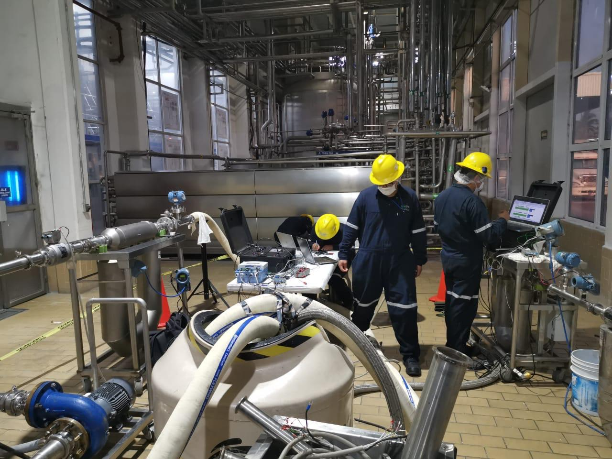
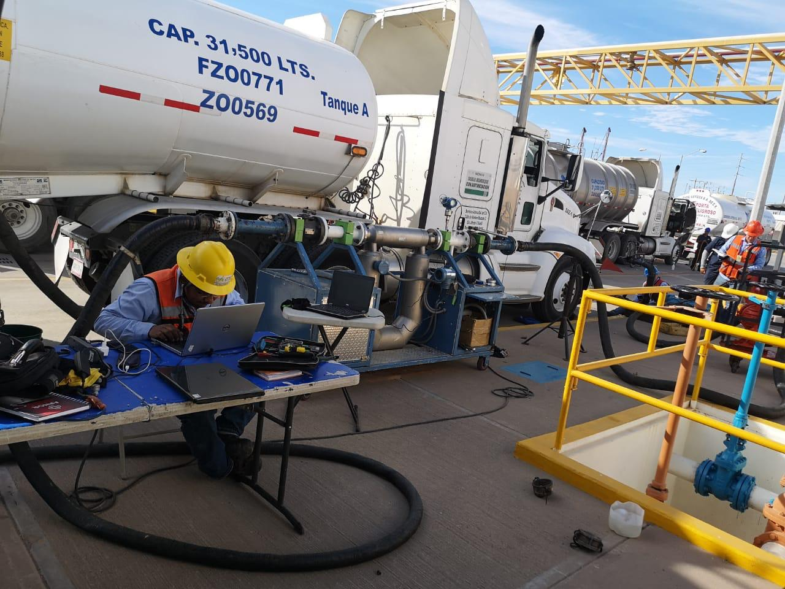
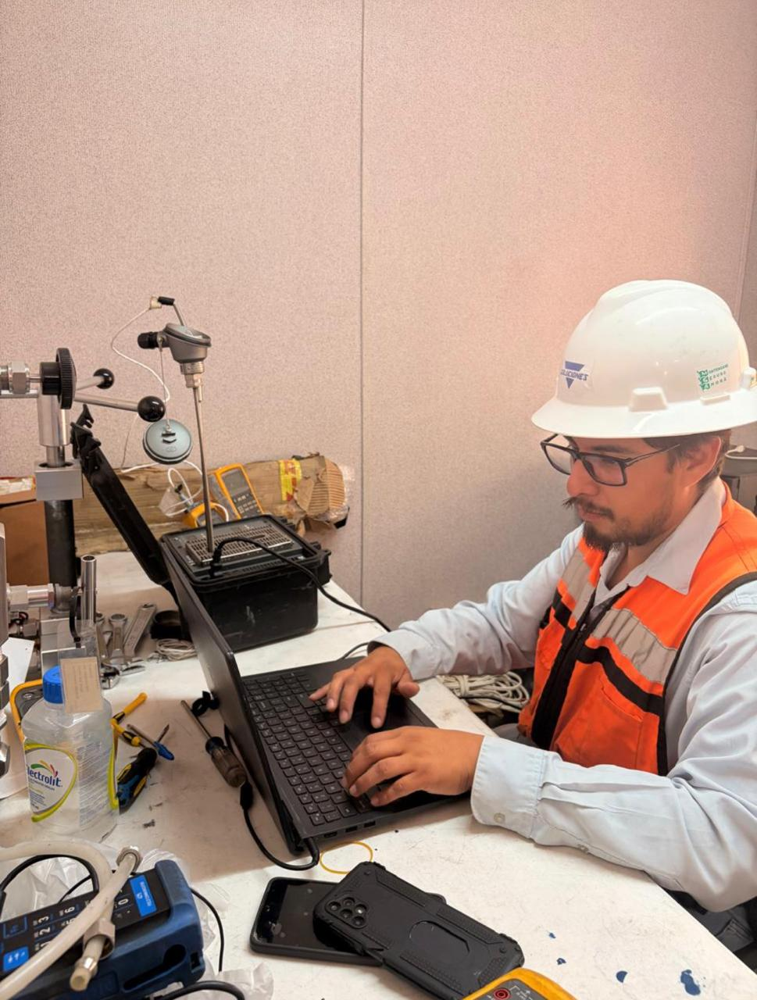
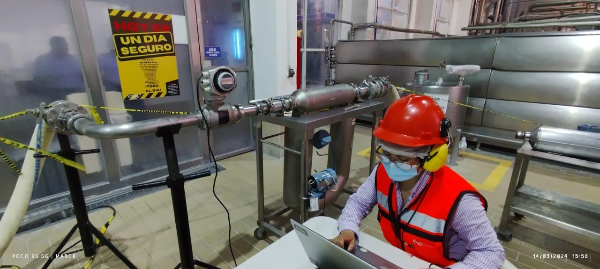
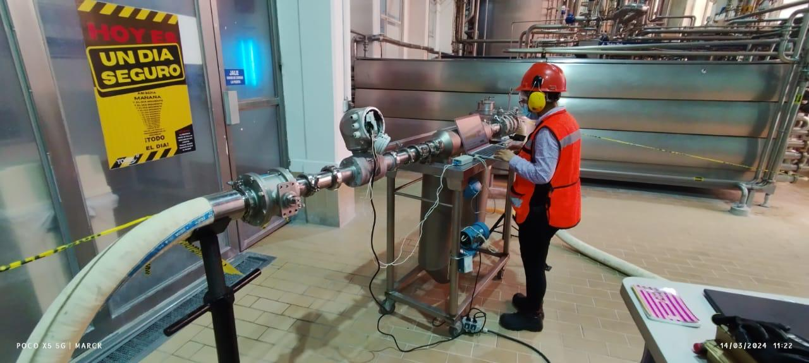

Decisiones con datos equivocados
Cuando la indicación no representa correctamente el proceso, producción y mantenimiento pueden actuar sobre información incompleta.
Calibración de flujo, presión y temperatura con respaldo metrológico. Ayudamos a identificar desviaciones antes de que se conviertan en merma, reproceso, incertidumbre operativa o problemas de auditoría.
*En servicios elegibles y sujeto al cierre técnico-documental del servicio.
Calibración industrial en sitio · Experiencia técnica real
Servicio técnico especializado, documentación trazable y calibraciones para operaciones industriales.

Una desviación pequeña puede afectar balances, dosificación, calidad, inventarios y decisiones de operación. La calibración permite comparar el instrumento contra una referencia y documentar su desempeño.
Cuando la indicación no representa correctamente el proceso, producción y mantenimiento pueden actuar sobre información incompleta.
Errores de medición pueden impactar transferencia de producto, dosificación, control térmico y repetibilidad.
La documentación metrológica facilita demostrar el estado del equipo y sustentar decisiones dentro del sistema de calidad.
Detectar desviaciones a tiempo ayuda a programar acciones antes de que el instrumento comprometa el proceso.

Medidores másicos y volumétricos. Revisa desviaciones que pueden impactar balances, transferencia de producto y control de proceso.
Ver servicio →
Manómetros, transmisores e instrumentos de presión dentro del alcance aplicable. Rango comercial indicado: 1 a 5,000 PSI.
Ver servicio →
Termómetros, RTD, termopares y termistores para procesos donde el control térmico define calidad y repetibilidad.
Ver servicio →
ISO/IEC 17025 establece requisitos de competencia, imparcialidad y operación consistente para laboratorios de ensayo y calibración. En EMC trabajamos bajo el alcance acreditado aplicable y con patrones vinculados a la cadena de trazabilidad metrológica.
Envíanos los datos y nuestro equipo podrá revisar el servicio con mayor precisión desde el primer contacto.